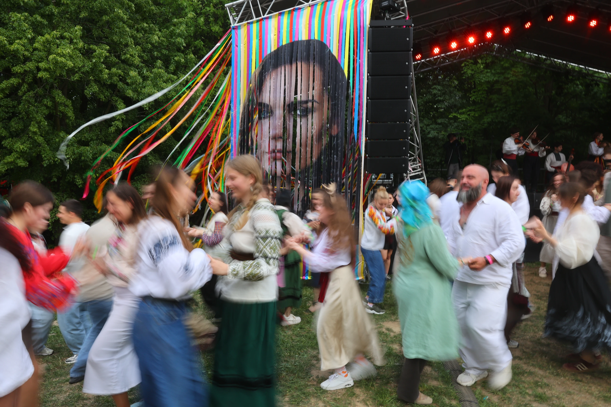
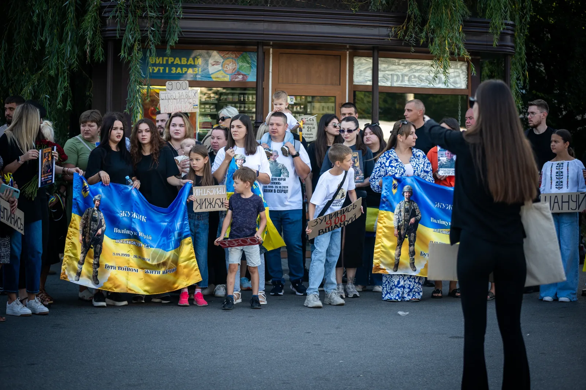
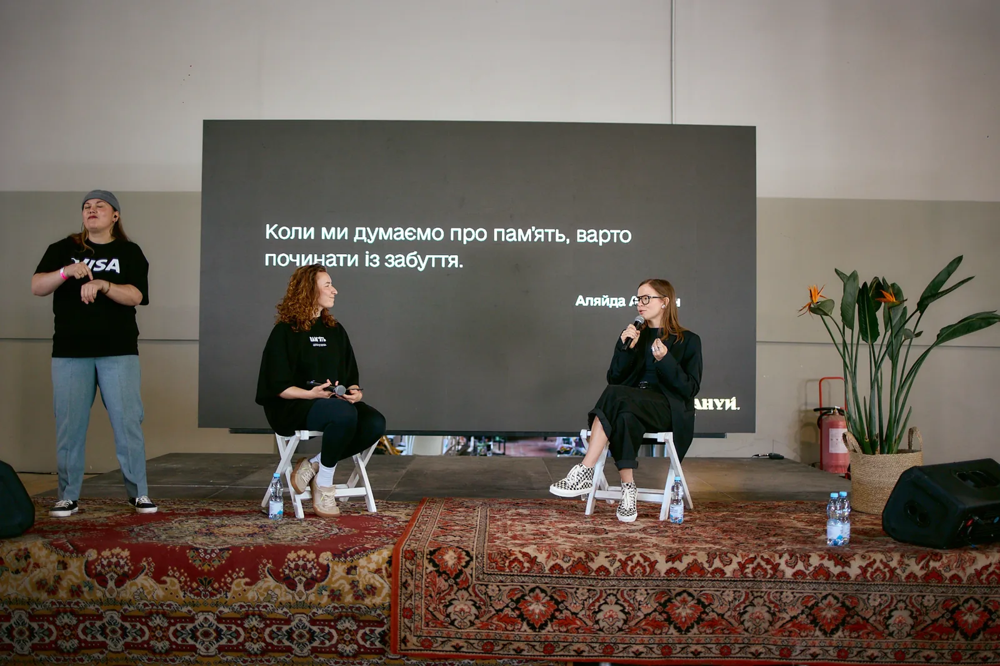

ЧекаFest
ЧЕКАфест – це благодійний освітньо-музичний фестиваль памʼяті Ірини Цибух. Він створений родиною та друзями Іри ЧЕКИ Цибух. Фестиваль щорічний та проводиться у найближчих зручних датах до дня народження Ірини – 1 червня.

Діяльність Ірини була присвячена політиці памʼяті, меморіалізації тих, хто віддав життя за Україну, а також реформі медіа в Україні, плеканню медіаграмотності та критичного мислення у суспільстві, утвердженню української культури, зокрема через пісню. З 2022 Іра була бойовою медикинею «Госпітальєрів» і рятувала життя на лінії фронту.
ЧЕКАфест існує, щоб утвердити нові практики памʼятування: живі, людяні, персоналізовані, без кальки та без пафосу, та продовжити справу Чеки як спадщину, яку реалізують люди з її кола.
Наше завдання – творити і поширювати культуру памʼятування через освіту, музику і спільні практики так, щоб памʼять про полеглих ставала дією, підтримкою живих і ґрунтом для майбутнього.
Інші напрями
Усі напрями-

Громади
Працюємо з громадами та координаторами осередків, допомагаємо створювати й впроваджувати локальні практики памʼяті. Поширюємо ініціативи в громадах, розробляємо ритуали памʼяті та прощання.
-

Бізнес
Допомагаємо бізнесу інтегрувати культуру памʼяті у свої комунікації. Проводимо консультації, аудити, лекції та сесії, щоб компанії могли говорити про війну, втрати й памʼять.